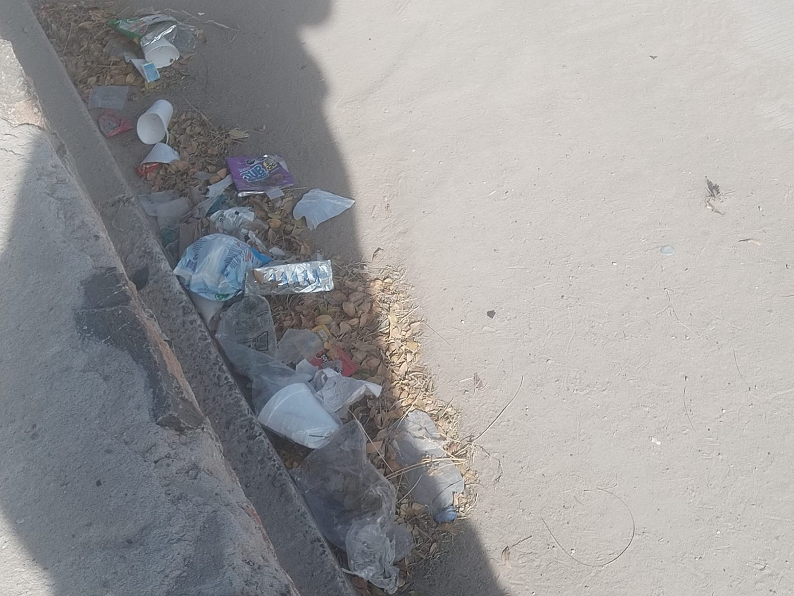
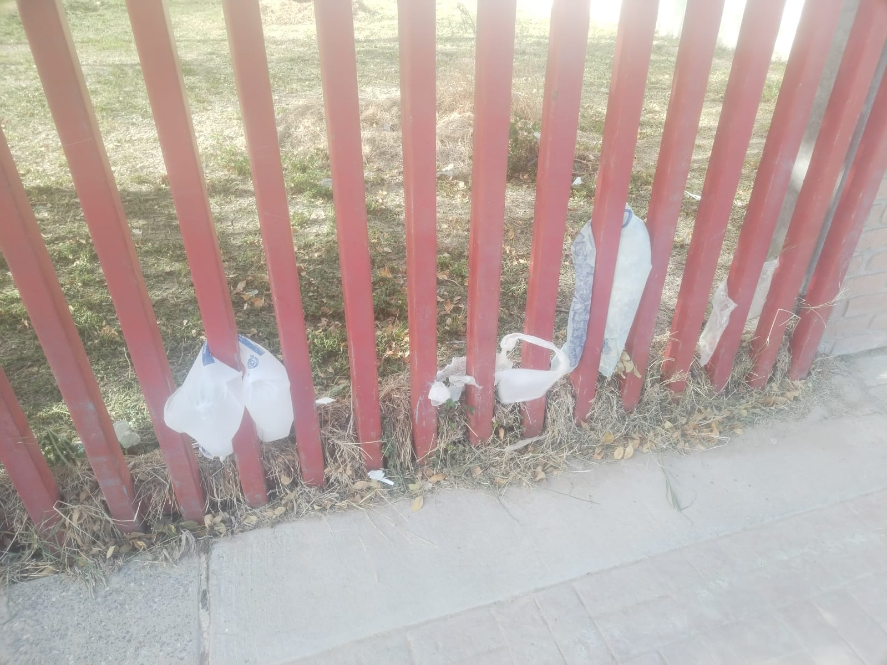
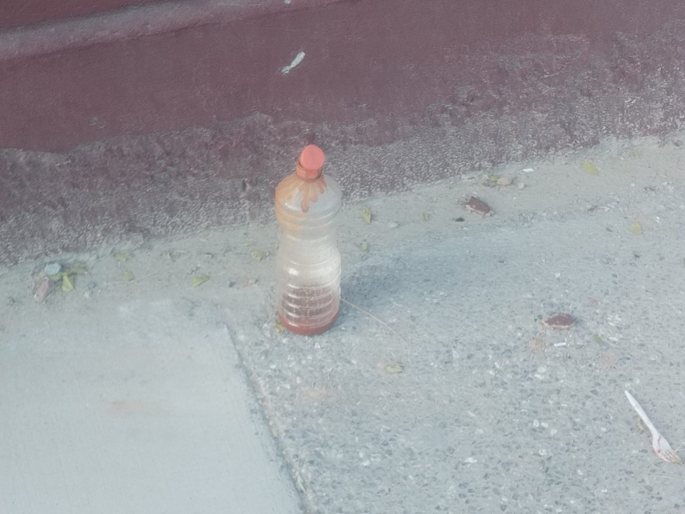
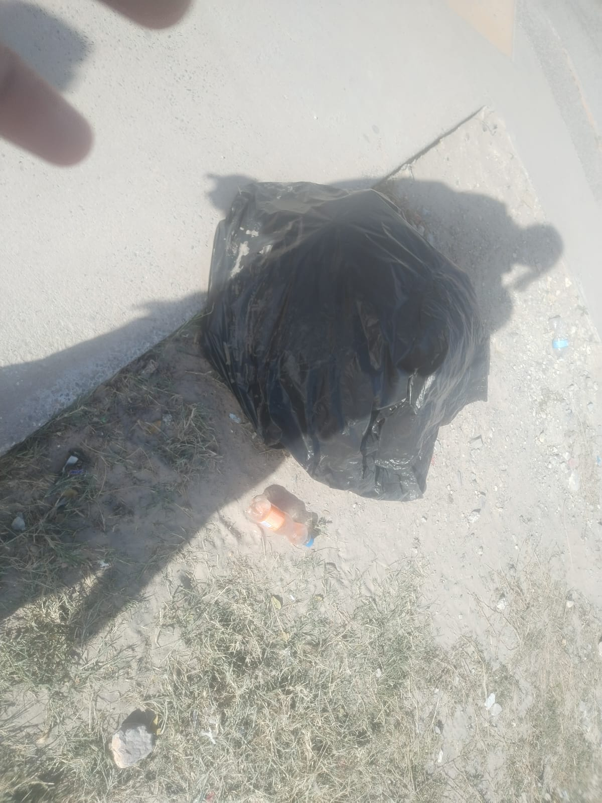

Diagnóstico Ambiental en el CBTis No. 269 y sus Cercanías
Al realizar un recorrido de observación tanto dentro de las áreas comunes del plantel como en las banquetas y perímetros exteriores del CBTis No. 269, resulta evidente una fuerte acumulación de residuos sólidos urbanos. Entre los desechos más frecuentes encontramos botellas de salsa vacías, vasos de unicel, envolturas de frituras, bolsas negras abandonadas y plásticos ligeros atrapados en el barandal perimetral.
Esta situación no ocurre por casualidad; tras analizar el entorno escolar, identificamos que el problema se origina principalmente por dos factores clave: los hábitos y la educación ambiental que traemos desde casa, y la falta de infraestructura suficiente de botes de basura tanto dentro como en los alrededores de la escuela.
1. Evidencia Fotográfica del Entorno Escolar
Las siguientes fotografías documentan la problemática real observada en las inmediaciones de nuestra institución educativa:

Figura 1. Acumulación de vasos de unicel, envolturas y botellas sobre la banqueta exterior.

Figura 2. Bolsas plásticas arrastradas por el viento y atoradas en la reja perimetral.

Figura 3. Envases de comida y botellas de salsa abandonadas tras el consumo en la vía pública.

Figura 4. Bolsas completas de residuos depositadas irregularmente en las esquinas cercanas al plantel.
2. Análisis de los Dos Factores Principales
Para resolver el problema de raíz, primero debemos entender por qué se acumula esta basura diariamente:
Factor 1: Educación y Hábitos Adquiridos en Casa
La cultura del cuidado ambiental comienza en el hogar. Cuando no existe el hábito familiar de guardar una envoltura hasta encontrar un contenedor o de separar los desechos, se normaliza tirar botellas, vasos o bolsas en cualquier esquina o banqueta, asumiendo que alguien más se encargará de recogerlos.
Factor 2: Escasez de Botes de Basura en la Escuela y Cercanías
Tanto en ciertos pasillos o zonas de convivencia del plantel como en las calles aledañas donde los estudiantes compran alimentos a la hora de entrada y salida, hacen falta contenedores visibles y de buena capacidad. Al no haber un bote cercano disponible, muchos optan por dejar los envases sobre las bardas o en el suelo.
3. Propuestas de Solución para Ambos Problemas
Desde el proyecto Eco-Venados en Acción proponemos atacar cada factor con acciones directas y viables:
Solución al Factor 1 (Educación y Cultura Ambiental):
- Campañas de concientización entre pares: Realizar pláticas breves en los salones y difundir infografías sobre el tiempo que tardan en degradarse el unicel y los plásticos que dejamos afuera de la escuela.
- Reto "Tu basura regresa contigo": Fomentar el hábito de guardar las envolturas o botellas en la mochila si no hay un bote cerca, llevando esa misma costumbre hacia nuestras familias en casa.
- Jornadas mensuales de limpieza voluntaria: Organizar brigadas estudiantiles por grupo para limpiar el perímetro exterior del plantel y generar sentido de pertenencia.
Solución al Factor 2 (Falta de Contenedores):
- Rehabilitación e instalación de puntos de acopio: Gestionar ante la dirección escolar y mediante donaciones de tambos reciclados la colocación de contenedores estratégicos en salidas, cafetería y áreas verdes.
- Señalización clara por tipo de residuo: Identificar los botes nuevos por colores (orgánico, plásticos PET y basura general) para evitar que se desborden con botellas sin aplastar.
- Vinculación con comercios y vecinos cercanos: Invitar a los puestos de comida y tiendas de los alrededores a contar con un bote visible para sus clientes y evitar bolsas abandonadas en las esquinas.